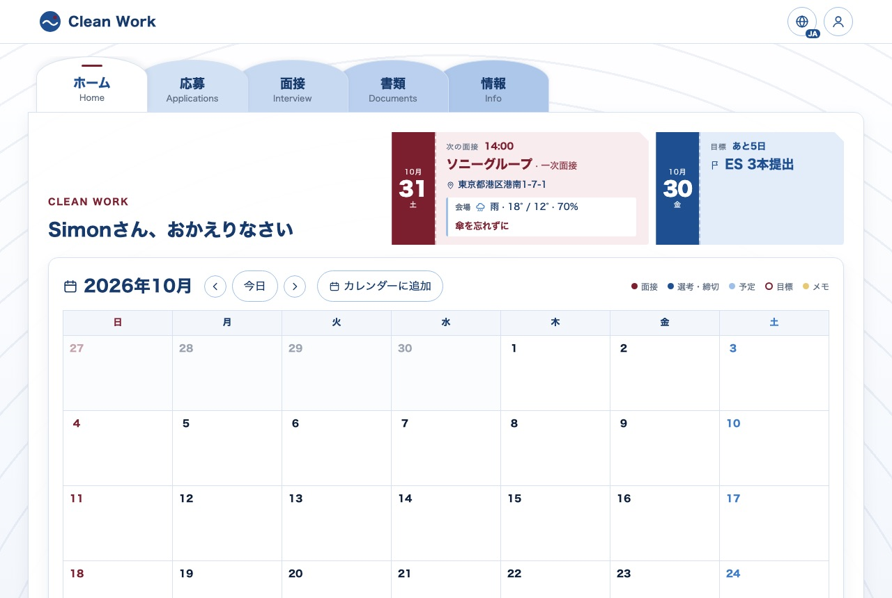
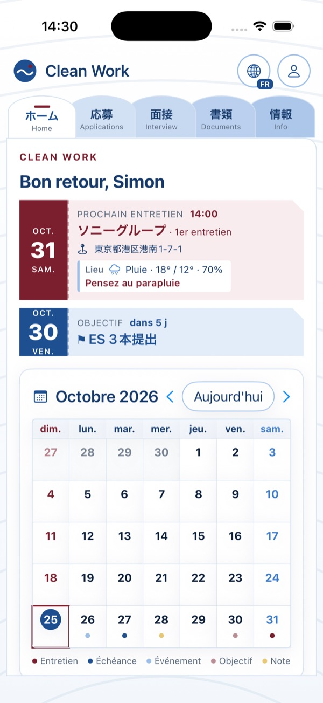
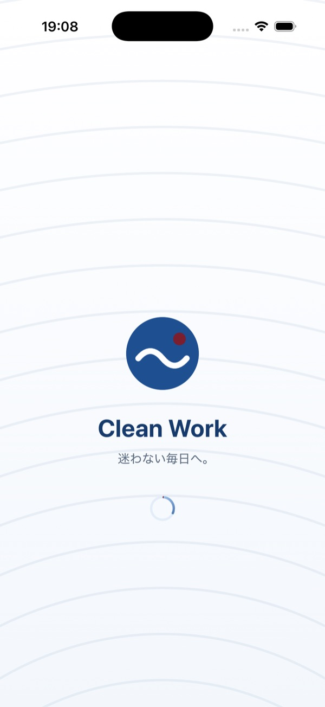
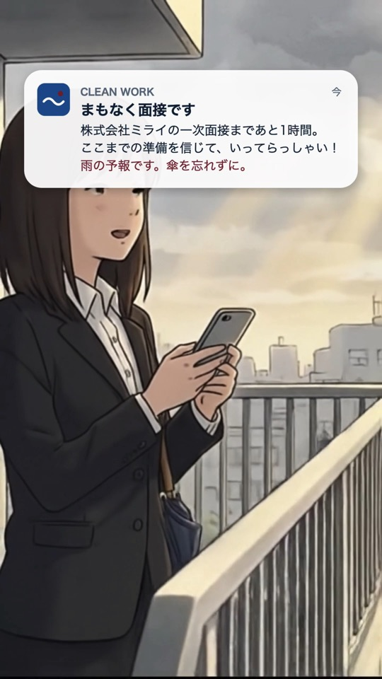
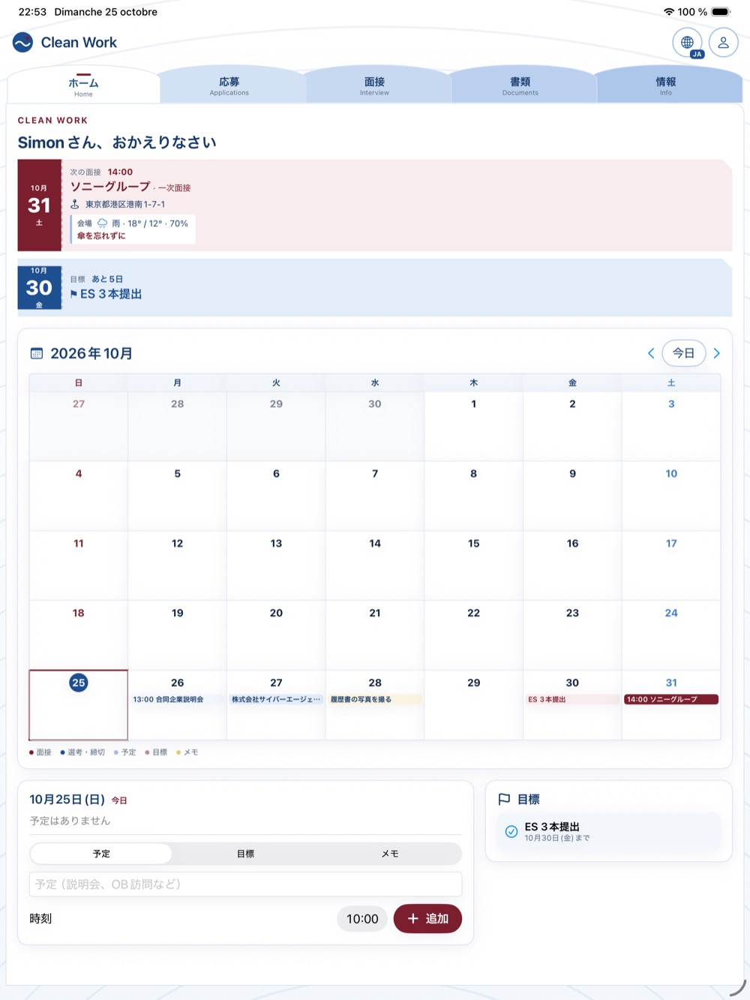
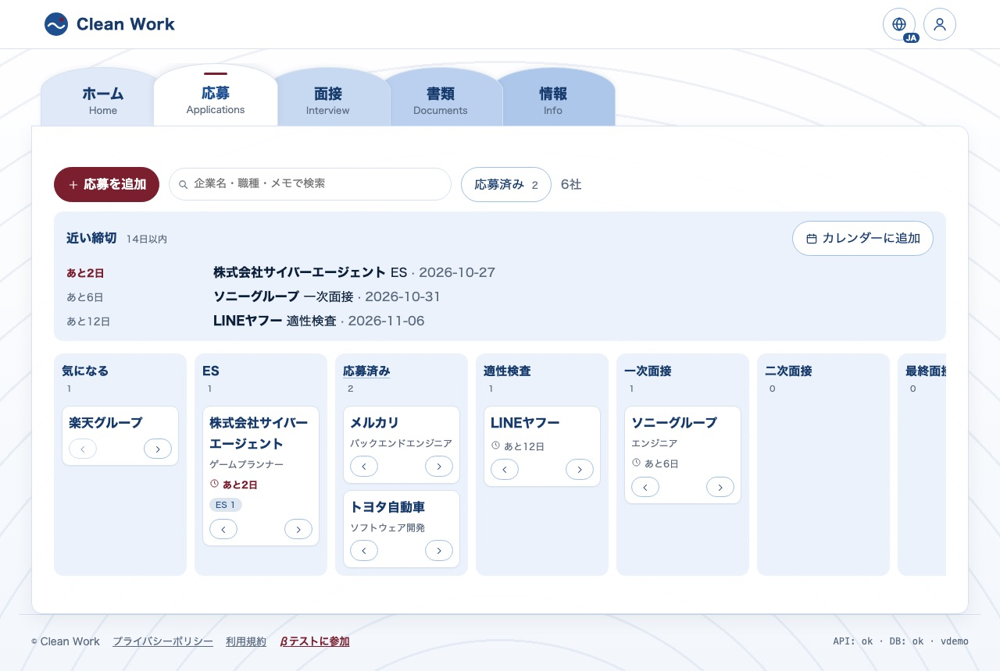

Case study · Web · iPhone · iPad
迷わない毎日へ。 Toward days without feeling lost.
就活に必要なもの（応募と締切、ES、面接練習、履歴書、ニュース）を一か所にまとめたアプリです。日本人も外国人も使えます。アプリが増えすぎて迷う、という問題をなくすことが出発点でした。
An app that gathers everything a job hunt in Japan needs (applications and deadlines, entry sheets, interview practice, résumés, news) in one place, for Japanese and international students alike. The starting point: too many apps, and getting lost between them.




Web（React）とiPhone・iPad（SwiftUI）が同じAPIを使います。サーバーは自分で管理せず、すべてAzureのマネージドサービス。秘密の鍵はサーバー側だけに置き、ブラウザやアプリには出しません。
The web app (React) and the iPhone/iPad app (SwiftUI) share one API. No servers to manage: everything runs on Azure managed services, and every secret key stays on the server side, never in the browser or the app.
| API | 何に使うか・なぜ What for, and why |
|---|---|
| Azure OpenAI | ESの添削、模擬面接、CVの読み込み、毎日のニュース選び。JSONスキーマで答えの形を固定し、引用が本文にあるかをサーバーで確認します。Entry-sheet review, mock interviews, CV import and the daily news digest. A JSON schema fixes the shape of every answer, and the server checks that quoted passages really exist in the text. |
| Entra External ID | アカウント（メールとパスワード）。パスワードを自分で保存しないため。削除は30日間の猶予つき。Accounts (email and password) without storing passwords myself. Account deletion with a 30-day grace period. |
| APNs | 締切の通知。有料の通知サービスを使わず、Appleに直接（HTTP/2とES256のトークン）。Deadline notifications, sent straight to Apple (HTTP/2 with an ES256 token) instead of a paid push service. |
| gBizINFO（経済産業省） | 応募先の公式データ：くるみん・えるぼし・ユースエールなどの国の認定と、残業時間・平均勤続年数・女性管理職・男性の育休。学生が企業を選ぶ判断材料になります。Official company data: government labels (Kurumin, Eruboshi, Youth Yell…) and workplace figures (overtime, tenure, women managers, paternity leave), so students can judge an employer. |
| 国土地理院 + Open-Meteo | 面接会場（なければ本社、自宅）の住所を位置に変換し、当日の天気を表示。面接1時間前の通知に「傘を忘れずに」。The interview venue (else the head office, else home) is turned into coordinates for that day's forecast; the reminder an hour before adds “take an umbrella”. |
| holidays-jp · zipcloud | カレンダーの祝日と、郵便番号から住所の自動入力（履歴書）。Public holidays in the calendar, and the address filled in from the postal code (résumé). |
| RSS | 厚生労働省・NHK・JETRO・Japan Times。AIが毎日5件を選び、3言語で要約。Ministry of Labour, NHK, JETRO and The Japan Times; the AI picks 5 items a day and summarises them in three languages. |
白・何段階かの青・ボルドーの3色。アイコンはすべて手描きのSVGで、絵文字は使いません。表示はいつも1つの言語だけ（日本語・英語・フランス語を地球儀で切り替え）。説明文は増やさず、画面を静かに保つことを優先しました。
White, several blues and a bordeaux accent. Every icon is a hand-drawn SVG, never an emoji. The interface always shows a single language (Japanese, English or French, switched with the globe), and explanatory text is kept to a minimum to keep screens calm.


変動する費用はAIだけです。それ以外は無料プランか、使った分だけの課金です。
The only cost that varies is the AI. Everything else runs on free plans or pay-per-use.
CLEAN WORK費用の明細 Cost receipt
固定費 Fixed costs¥0
AIの上限 AI cap, per month¥3,000
毎週月曜の朝、費用メールが届きます
A cost e-mail arrives every Monday morning
mainにプッシュすると、APIとWebのテスト → デプロイ → 本番サイトの確認が自動で走ります。本番は2時間ごとにも確認し、失敗するとメールが届きます。
A push to main runs the API and web tests → deploy → a smoke test of the live site. The live site is also checked every 2 hours, with an e-mail on failure.
| 分類 Area | 数 Count | 例 Examples |
|---|---|---|
| API | 211 | users can't read each other's data, AI limits and budget, quotes checked against the text, reminders sent once a day even if the job reruns, account deletion, open-data parsing, beta sign-up anti-spam, a full user journey |
| Web | 120 | every screen in one language at a time, calendar and quick notes, application board, profile and CV import, holidays and weather, sign-in errors, no blank page after a deploy |
| iOS | 80 | reminders (the day before, the same day, one hour before an interview with weather advice), push registration, API client, profile, CV import, agenda |
AIはテストでは偽物に置き換え、本物のAIは手で確認します（CVの読み込みなど）。画面の見た目と実機での通しテストは、確認リストを作って手作業で行っています。
The AI is replaced by a fake in tests and checked by hand for real (CV import, for example). Visual rendering and end-to-end checks on real devices follow a written manual checklist.
サイトのどのページの下にもリンク。Appleアカウントのメールと端末を送るだけ（アカウント不要）。A link at the bottom of every page; send your Apple Account e-mail and device, no account needed.
毎朝9時、新しい申し込みがGitHubのissueにまとまり、メールで届きます。Every morning at 9, new requests are listed in a GitHub issue that arrives by e-mail.
App Store Connectの外部テスターに追加すると、AppleがTestFlightの招待を送ります。Adding them as external testers in App Store Connect makes Apple send the TestFlight invitation.
アプリでスクリーンショットを撮り、TestFlightから送信。Testers take a screenshot in the app and send it through TestFlight.
申し込みフォームは同意のチェックが必須、同じメールは1回だけ、1つの接続から1日5回まで、ロボット用の見えない入力欄つき。メールは180日後に自動で削除されます。
The form requires consent, keeps one request per address, allows 5 a day per connection and has an invisible field that catches bots. Addresses are deleted automatically after 180 days.